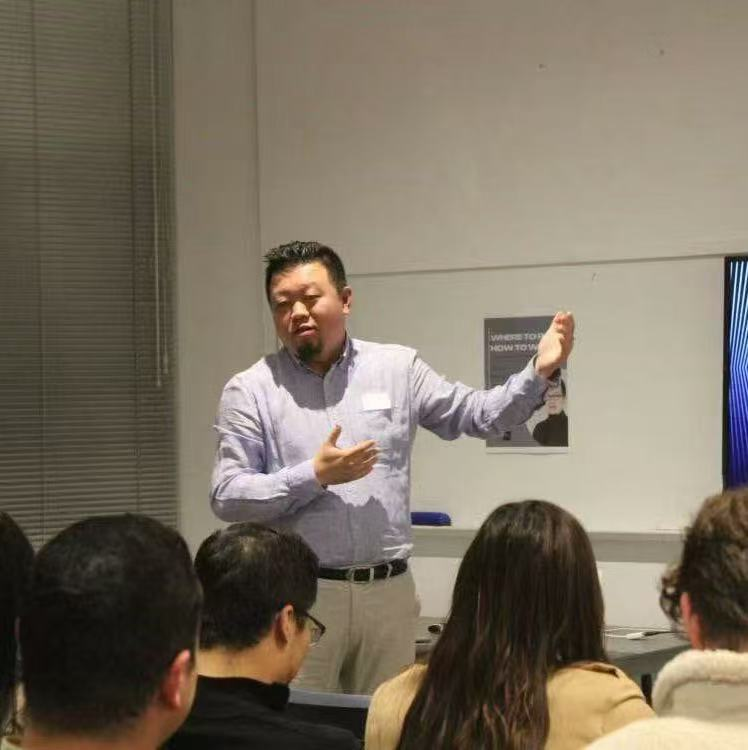

认识StockQueen背后的联合创始人 — 两位扎根澳洲和新西兰的创业者， 将科技、金融与人工智能融为一体。
联合创始人
投资人 | AI应用 | 权益策略
布里斯班 / 奥克兰
Richard Hu是一位投资人与创业者，拥有超过14年在新西兰和澳大利亚的专业经验。 常驻布里斯班与奥克兰之间，他在房地产市场、客户咨询及高价值商业运营领域 积累了深厚的专业知识，对两国市场有着独到的理解。
Richard活跃于投资领域，关注美股市场、量化交易系统及早期项目投资。 他专注于识别数据驱动的投资机会，运用系统化方法进行投资组合管理， 尤其对动量策略和量化研究有浓厚兴趣。
近年来，Richard将重心扩展至技术驱动的商业模式和人工智能应用。 他积极运用AI工具提升研究、分析和决策效率，涵盖房地产评估、 金融市场及数字化业务运营等多个领域。
Richard以纪律严明、基于概率的方式做决策 — 这一能力通过半职业级别的 德州扑克练就，他在其中运用博弈论、期望值框架和资金管理方法。 这种分析思维直接服务于他的投资策略和风险管理哲学。

联合创始人
AI策略 | 跨境运营 | 金融科技
奥克兰
Ray Deng是一位常驻奥克兰的跨境创业者与AI策略师。他是MoveHub、Compass AI 和WorkVisas.work的创始人，致力于构建连接中国、新西兰和澳大利亚的创新解决方案。 凭借对澳洲和新西兰市场的深刻理解，Ray将战略视野与实际执行力完美结合。
Ray专注于开发和实施能够变革业务运营的AI策略。从机器学习模型到自然语言处理， 他构建智能系统以提升决策效率并自动化复杂工作流。他的技术深度涵盖AI系统架构、 量化建模和金融科技基础设施。
Ray搭建中国与澳洲和新西兰市场之间的桥梁，识别贸易、投资和合作机会， 同时驾驭监管框架和文化差异。他与创始人、投资者及跨境运营者合作， 将复杂想法转化为可执行的商业方案。
在劳动力流动领域，Ray创建平台连接跨境人才与机会，简化签证流程、 岗位匹配及国际专业人士在亚洲与澳洲和新西兰之间流动的融入过程。
Richard和Ray扎根于澳大利亚与新西兰，他们坚信AI驱动的量化策略能够让 机构级投资工具走向大众化。StockQueen诞生于两人互补优势的交汇点 — Richard的投资洞察力与市场经验，结合Ray的AI工程能力与跨境运营专长。